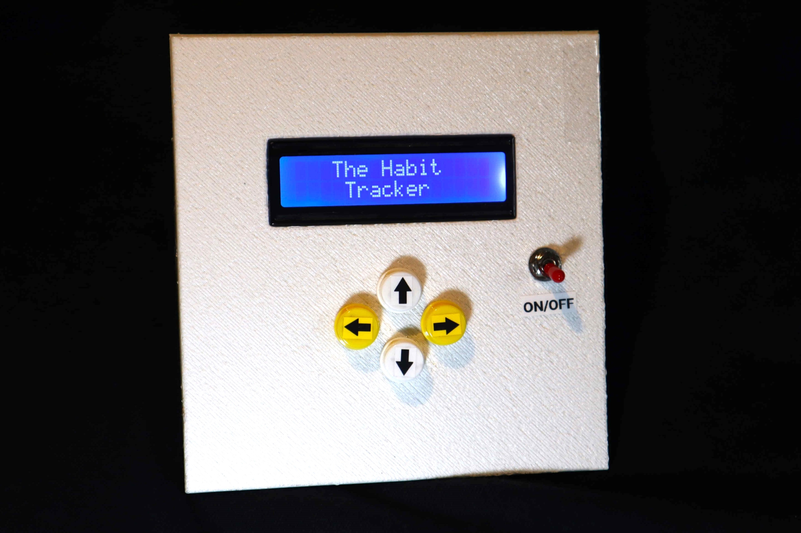
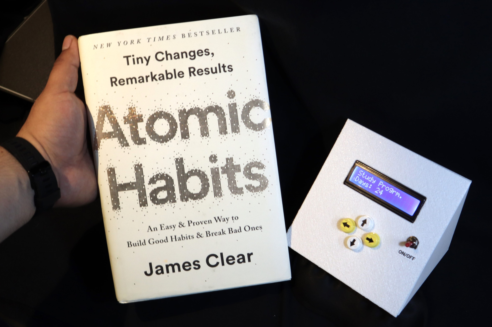
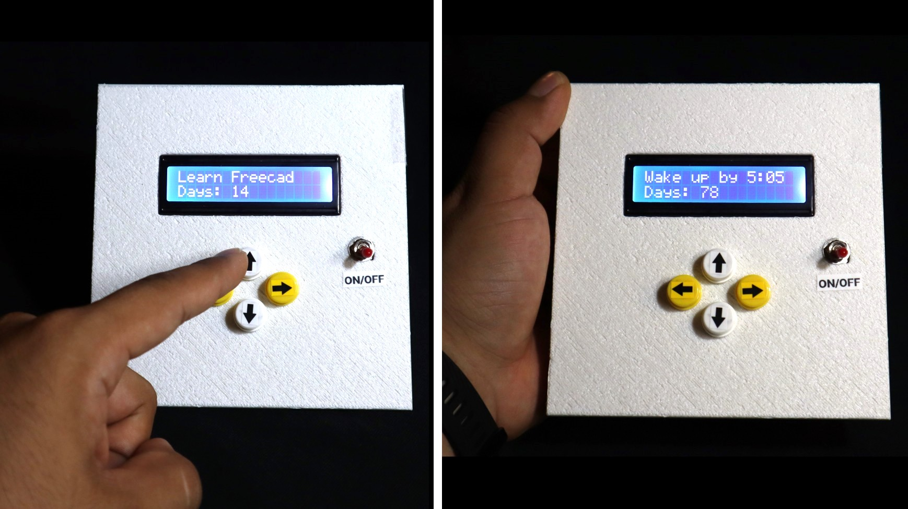
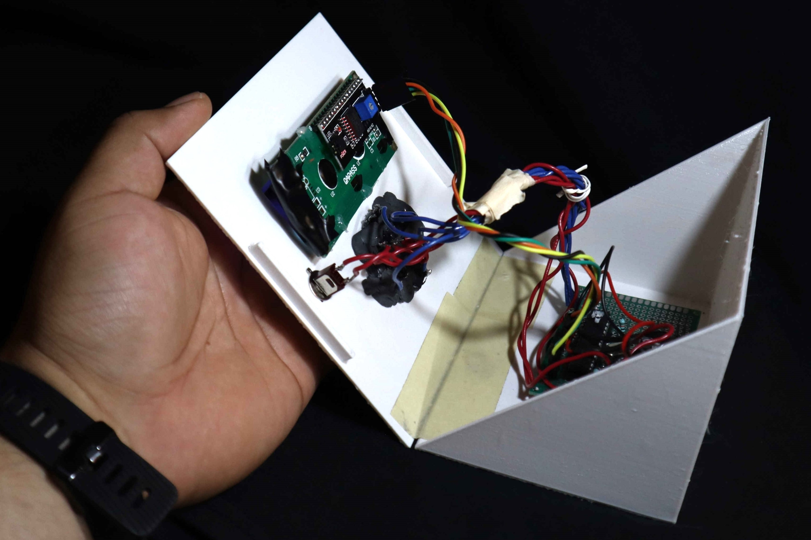
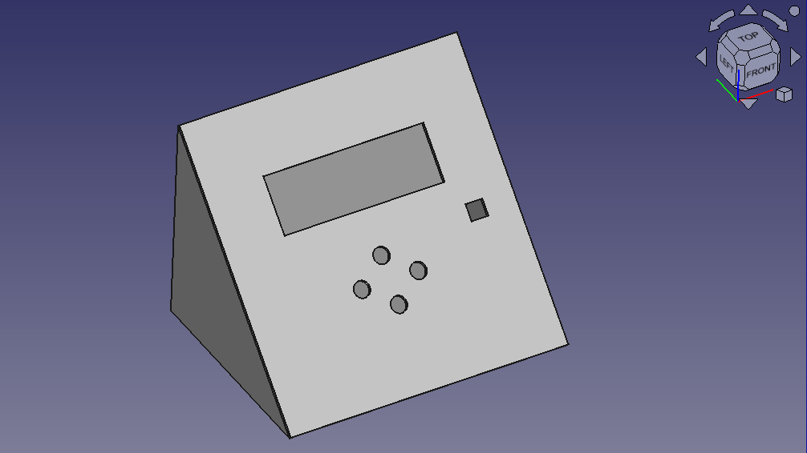
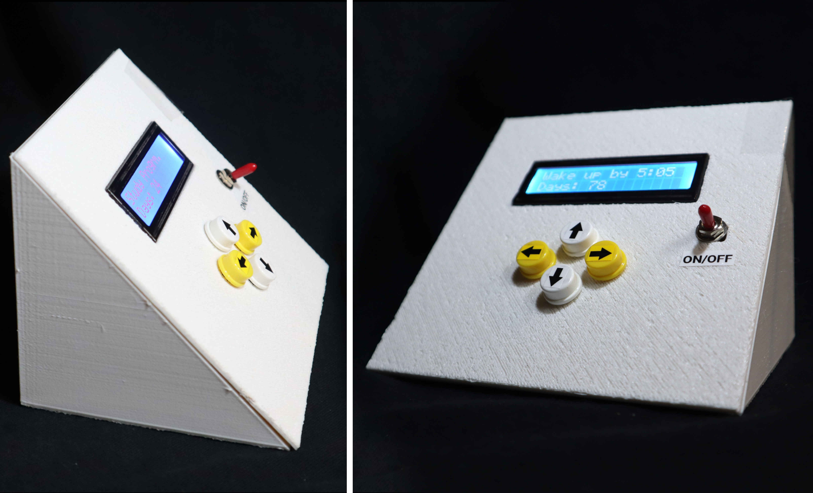

The Habit Tracker

This system allows you to track your habits, for example, waking up at 5 am, and then log the data into the system to monitor your progress. While this is a relatively simple concept, there is a psychological rationale behind it. The inspiration for this project came after I read the book 'Atomic Habits' by James Clear,
Rercording your last action creates a trigger that can initiate your next one. Habit tracking naturally builds a series of visual cues like the streak of X's on your calendar or the list of meals in your food log. When you look at the calendar and see your streak, you'll be reminded to act again. . . The mere act of tracking a behavior can spark the urge to change it.

The device consists of an LCD screen and four buttons. The right and left buttons allow you to cycle through different 'habits,' while the up and down buttons control the number of days you've completed each habit

The system was developed around the ATmega328p microcontroller, with a connector for interaction with the serial monitor. Since user data is updated manually, this information is stored in the ATmega328p's EEPROM.

The enclosure was designed using FreeCAD and 3D-printed. Currently, I haven't made this project open source as I haven't documented it properly. However, once I take care of this, it will be made available on GitHub.

